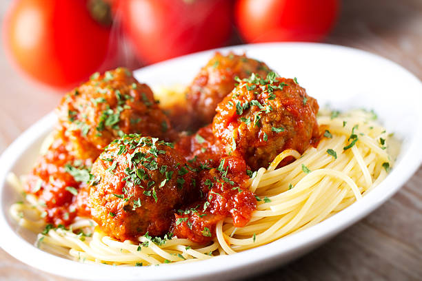

Meatball Recipe

A meatball is ground meat rolled into a ball with seasoning. Meatballs are cooked by frying, baking, steaming, or braising in sauce.
Ingredients
- Ground meat
- Black pepper, parsley and garlic
- Eggs
- Romano cheese
- Italian bread
- Water
- Olive oil
Making the Meatballs
- Combine the first eight ingredients in a bowl.
- Add the bread crumbs and slowly add the water.
- Shape the mixture into meatballs.
- Fry the meatballs until they're all brown and crisp.